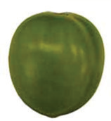
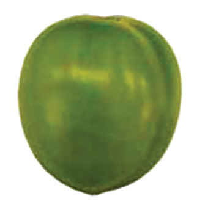
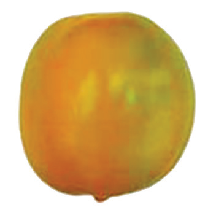
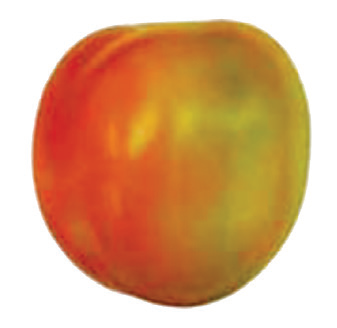
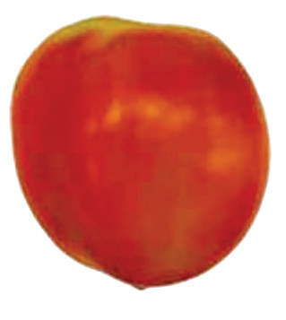
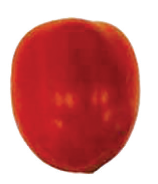

Stage I: Mature green
The surface is completely green
Stage II: Breaker
It has a definite break in colour from green to tarnish-yellow
Stage III: Turning
Some tomatoes show a change in colour from green to tarnish-yellow, pink, red or a combination of the colours



Stage IV: Pink
About 30%-60% of the tomatoes have changed to pink or red colour
Stage V: Light red
60%-90% of tomatoes have pinkish-red or red colour
Stage VI: Red ripe
More than 90% of the tomatoes have attained red colour
Figure 8.16: Different stages of tomato maturity and ripeness
Harvesting should be done in the morning or late evening to maintain their quality and extend shelf-life. The fruits are removed from plants by gently twisting or rotating them from the stem without fruit stalk. However, cherry tomatoes are harvested in bunches. When harvesting, do not drop the fruits rather put the fruits gently in a harvesting container. Postharvest management of tomatoes includes the following:
(a) Sorting: Do sorting and grading under shade, inorder to avoid the adverse effects of rain, heat and sunlight that can speed up tomato fruit spoilage.
(b) Packaging and transporting: Tomatoes are commonly packaged in bamboo, wooden, and plastic crates. However, stackable plastic and wooden crates are best. Avoid over-packing. Lining the crates can prevent fruits from getting bruised, but may stop air from circulating. Packaging helps to protect the tomatoes from pests, loss of moisture, and damage. It also looks good. Transport tomatoes in covered, ventilated trucks.